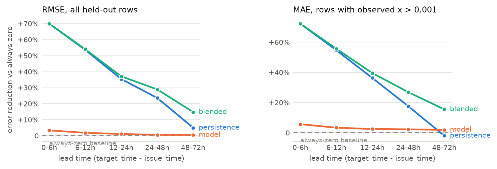

Huawei Tech Arena 2026 — Topic 2, AIDC Power-Supply Risk Forecasting, Phase 1
The system predicts x = customers_out / total_customers for five US counties, at
every lead time both tasks require, from archived ECMWF IFS HRES forecast runs plus the
observed EAGLE-I outage history available at each issue time. The submitted x is a
fraction of MCC.csv as published, the denominator the organizers confirmed on
24 August that they grade against; the model trains on a repaired one, and Section 3.4 is
why both are necessary. It is a single LightGBM
regressor with a Tweedie objective, one model covering both tasks, with lead time as an
explicit feature, blended toward a persistence forecast by a weight fitted per lead
bucket. The submitted file contains 65,880 rows: 92 daily Task A batches of hourly means and
365 six-hourly Task B batches of 15-minute instants, five counties each, generated from 93
distinct archived forecast runs. It is built from 388 forecast runs across 102 counties —
2.80 million rows — spanning September 2024 to August 2025, of which the
2.30 million before 1 May 2025 are used for training and the rest held out.
The honest headline is that the learned model contributes far less than the way it is combined with the observed outage state. Against an always-zero forecast, which is a strong baseline when 69.9 % of the target values are exactly zero, the model alone reduces RMSE by 1.0 % on the forward-in-time holdout and MAE by 5.6 % on the rows that actually contain an outage. What it leans on hardest is the recent observed outage state (36 % of total split gain); all weather together takes 28 % across three feature groups, and county identity 20 %.
The result that changed the submission came last. Evaluated on a seasonally matched autumn window rather than on the late-spring holdout — Section 7.1 — the same model alone is worth only 1.1 % against always-zero, while blending it with persistence is worth 30.4 %. Autumn outages are multi-day storm-restoration events, so the observed state at issue time stays informative across the entire 48-hour Task A horizon; late-spring outages are convective and decay within hours. The blend weights were originally fitted in the wrong season, and refitting them in the right one is the single largest improvement in this submission.
The guidelines let each team pick its own five counties and ask for the choice to be
justified. Our first instinct — rank all ~3,050 EAGLE-I counties by how often they report
an outage and take the top five — is a trap, and it is worth describing because the trap is
invisible in the output. Ranking by the fraction of 15-minute intervals with any nonzero
customers_out returns Harris County TX, Miami-Dade, and their peers at rates of
99.9 %. Those counties are not unusually fragile. They are unusually large, and in a county
with three million customers there is essentially always somebody off supply somewhere.
What that ranking recovers is population, not weather risk.
So we ranked instead on the fraction of intervals with x above 1 %, which requires an
event large enough to be visible at county scale. On top of that we required continuous
EAGLE-I coverage across the window (a reporting gap and a quiet county look identical in a
sparse event log), a denominator above 5,000 customers so that x is not dominated by
single-household noise, and diversity of weather regime across the final five rather than
five variations of the same climate.
The activity statistics come from January–August 2025 only, not the multi-year climatology we wanted: the forecast archive that supplies our features starts in March 2024 and the API budget did not stretch back further. That window at least stops before the evaluated one opens, so the selection never looks at a month it will be scored on.
| FIPS | County | State | Customers | Significant | Max x |
Regime, and why it is in the set |
|---|---|---|---|---|---|---|
| 72013 | Arecibo | Puerto Rico | 191,803 | 15.2 % | 0.725 | Tropical/Caribbean. A chronically fragile grid, and still the strongest signal in the set once the denominator is corrected. |
| 37119 | Mecklenburg | North Carolina | 588,615 | 0.4 % | 0.023 | Piedmont/south-east. Hurricane remnants inland plus severe summer convection; Charlotte metro, so a large and well-reported denominator. |
| 54005 | Boone | West Virginia | 13,090 | 12.4 % | 0.343 | Appalachian interior. Ice storms and thunderstorm downbursts on wooded terrain; no maritime influence at all. |
| 26097 | Mackinac | Michigan | 8,757 | 12.2 % | 0.866 | Great Lakes. Winter storms and repeated near-total local outages — the highest-variance county of the five. |
| 22071 | Orleans | Louisiana | 212,936 | 0.9 % | 0.245 | Gulf Coast. Included deliberately despite a thin January–August signal: peak hurricane season falls inside the test window, and leaving the regime out because our proxy window misses it would be exactly the wrong inference. |
Orleans is the one selection that a pure ranking would not have made, and we would defend it as the most important of the five. September to November is the Gulf hurricane season. A selection procedure calibrated on January to August will systematically under-rate Gulf counties, because their season has not started yet in the data it looks at. Correcting for that by hand is not cherry-picking; refusing to correct for it would be.
One caveat we would rather state than bury. The ranking ran before the denominator work of
Section 3.4 and used MCC.csv throughout, so two of the five were ranked on
a denominator we later found to be physically wrong: Mecklenburg's too small by
20.9×, which carried it in as the strongest mainland signal, and Arecibo's by
4.7×, which is why its x saturated at 1.000. On the repaired
denominators of Table 1, Arecibo survives as the strongest county in the set
(43.5 % → 15.2 % significant) and Mecklenburg becomes the quietest
(13.8 % → 0.4 %). We kept it: the regime argument that shortlisted
it is untouched by the arithmetic, but a county that entered on a number we later corrected
is not there on the stated criterion. Read Mecklenburg as a selection we disclose, not one
we defend — with one thing added since. Those ranking numbers are MCC ratios, and MCC
is the unit the submission is scored in, so Mecklenburg's scored x is
genuinely active while its physical x is quiet. Both are facts about it.
The competition materials point at the ORNL/OSTI record, which routes to a Globus endpoint
covering 2014–2022 and requiring an account. That is not the only scriptable route, and
believing it was cost most of a day: the complete 2014–2025 release, 17 files and about
11.6 GB, sits on figshare as article 24237376 (version 4, February 2026), and every annual
file is an anonymous HTTPS GET against ndownloader.figshare.com. Our downloader
resolves that file table from the figshare API rather than hard-coding it, and fetches
whichever years are asked for.
The annual files do not share a schema, and the drift is silent rather than fatal. Files
from 2014–2022 and 2025 use fips_code, county, state, customers_out,
run_start_time. The 2023 file calls the fourth column sum. The 2024 file adds a
sixth column, total_customers. A straightforward pd.concat across years
therefore produces a customers_out column that is entirely null for 2023 without
raising anything at all. Our loader normalizes headers through an explicit alias table
before concatenating, and raises on an unrecognized rename instead of degrading into
nulls.
EAGLE-I emits a row only when customers_out > 0. Everything else is implicitly
zero, and a model trained only on rows that exist would never see the negative class it
mostly has to predict. Preprocessing reindexes each county onto a complete 15-minute grid
across the period of interest and zero-fills the gaps, then computes x and clips it
to [0, 1]. The clip now only catches the 111 counties of Section 3.4 whose numerator
no candidate denominator can hold; everywhere else the denominator was repaired instead.
About 6.5 % of raw EAGLE-I rows carry an explicit null customers_out. That is not
the same as an absent row. An absent row means no outage; an explicit null means the
upstream ETL could not get a reading. Coercing nulls to zero would encode “we do not know”
as “confirmed no outage”, and would bias the model toward under-predicting risk during
exactly the periods when utility reporting is itself degraded — which is plausibly
correlated with the severe weather we are trying to predict. We treat the two cases
differently: a null in the target means the row is dropped, since there is nothing to
train or score against; a null in an autoregressive input is left as a null and handed
to LightGBM, which learns a default split direction for missing values. Imputing a
fabricated number there would be strictly worse.
The guidelines require that prediction-time weather be the forecast genuinely available at
the issue time, which rules out the Historical Forecast API (it stitches together only the
first hours of successive runs and so does not preserve lead-time-specific values) and
rules out observed reanalysis. We use Open-Meteo's Single Runs API with
models=ecmwf_ifs, which returns a specific archived initialization of IFS HRES at
9 km. That archive begins on 14 March 2024; every other model in the endpoint is archived
only from April 2026 and cannot overlap the test window. So IFS HRES is not a preference
here, it is the only option, and its start date is the hard boundary on how far back
training data can go.
The binding constraint on this project turned out to be the endpoint's rate limits. Against published free-tier terms of 10,000 calls a day, the Single Runs endpoint enforces three much tighter undocumented windows: per minute, per hour (~62 minutes to clear), and a daily cap that in practice cut in around 110 to 130 calls. The same quota pays for generating the submission, so it shaped the design. Two responses followed, both of which cost accuracy:
x is a ratio, so the customer count in its denominator multiplies every number we
predict. For most of this project we took it that the organizers held a private reference
value, which made the denominator the one uncontrolled risk in the submission. They do not.
Asked whether scoring divides by total_customers exactly as MCC.csv
gives it even where the recorded customers_out exceeds it, they answered on
24 August: “even the official dataset could have mistake, when grading we will ignore
such timestamp”, alongside an earlier “MCC.CSV in the first link is the
total customer number listed in the fips code”. Only a grader dividing by MCC as
published produces a timestamp worth ignoring, so that settles the unit: the submitted
number is a fraction of MCC, and the intervals MCC makes impossible are dropped from
scoring rather than repaired.
We still cannot train on it. Summed per state against coverage_history.csv, MCC
reproduces the published state total to within a few percent almost everywhere — but
North Carolina lands at 1.82 M against 5.30 M, and Mecklenburg, one of our five,
carries 28,172 customers against 588,615 in EAGLE-I's own 2024 annual file: a factor of 20.9 on
every x we computed for it. Switching wholesale to the 2024 column is wrong in the
other direction, giving Arecibo 191,803 against MCC's 41,122 in a municipio of ~87,000
residents. So the reconciled table takes each state's allocation from whichever candidate
reproduces its published total more closely (Kansas, North Carolina and Texas move), then
overrides that per county wherever the largest customers_out on record exceeds the
chosen denominator — a ratio on [0, 1] cannot have a numerator 3.4 times its divisor.
That repairs 149 counties, Arecibo among them; 111 more, where neither
candidate holds the numerator, take the larger and are flagged unresolved
(data/processed/denominator_reconciliation.md).
So the project carries two denominators. The reconciled one is what the target grid, the
training table, the model and the blend all divide by: a target that saturates at
x = 1 for the whole duration of a storm teaches the model that every
large event is the same size. MCC as published is what the submission is read in. Since
x is linear in the reciprocal of its denominator, converting between them is one
constant per county applied in one place (to_grading_units() in
predict.py): three of our five are multiplied by 1, Mecklenburg by 20.89 and
Arecibo by 4.66.
Until the answer came we had left the submission in reconciled units, on the argument that
under-predicting x is the cheaper error on a target made mostly of zeros. That was
wrong, measurably: on the equivalent autumn window of 2024 the grader discards only 1.7 %
of Mecklenburg's intervals and 0.2 % of Arecibo's for exceeding 1, and across the rest the
truth in MCC units averages 0.0151 and 0.0300 against the 0.00072 and 0.00643 we would have
submitted — a systematic 21× and 4.7× under-prediction on two of the five
counties.
One alignment question is what a Task A row is, not when it is. EAGLE-I records every 15 minutes and Task A is scored hourly, so the organizers asked for hourly mean aggregation: a row here is the mean over the four quarter-hours its label opens, 03:00 meaning [03:00, 04:00). It matters — across event hours in our five counties over January–August 2025 the hourly mean and the value at :00 differ by a fifth of the quantity predicted, an RMSE 18 % of this system's autumn figure — and needs no second model, since the mean of unbiased estimates of the four instants estimates their mean without bias. Task B rows are 15-minute instants already.
Everything internal is naive UTC. EAGLE-I's run_start_time is parsed as UTC and
never localized; the Open-Meteo response comes back timezone-aware and is converted to naive
UTC at the point where the weather table is renamed for joining, because a tz-aware and a
tz-naive column merge into an empty result rather than an error. Output timestamps are
formatted as ISO 8601 with an explicit Z. FIPS codes are strings everywhere,
zero-padded to five characters at every load, which matters for Puerto Rico and for every
state whose code starts with a zero.
Spatial matching is the simplest thing that is defensible: each county is represented by its internal-point centroid from the 2025 US Census Gazetteer, and the forecast is requested at that single coordinate. Phase 1 targets counties rather than sites, so there is no site-to-county assignment to make; the approximation is that one point represents a county's weather, which for a lake-shore county like Mackinac is a real simplification. Area-averaging over a grid of points per county would be better and costs a multiple of the API budget we did not have.
Fifty features in five groups. The design principle throughout is that a feature must be a
function only of data timestamped at or before the issue time, checked by a single shared
assertion (code/features/causality.py) rather than by scattered ad-hoc guards.
Raw forecast fields (12): 10 m wind speed, gusts and direction; precipitation, rain and snowfall; 2 m temperature and dew point; surface pressure; CAPE; cloud cover; freezing-level height.
Derived weather (11). Gust cubed, because wind loading on a conductor or a tree scales roughly with the cube of speed and the linear gust value compresses exactly the range that breaks things. Centered rolling gust maxima over ±3 h, ±6 h and ±12 h, which answer “is this hour inside a windstorm” rather than “is this hour windy”. Cumulative precipitation over the preceding 6 and 24 hours, as a proxy for soil saturation, since saturated ground plus gusts is what uproots trees. A wind×rain interaction term. Three-hour pressure change and one-hour gust jump for rate-of-change. All of these are computed strictly inside a single forecast trajectory, which is why a centered window is causally fine: those hours were disseminated together in one run, and causality here is run time against issue time, not neighboring hours within a forecast that has already arrived.
Climatological exceedance (12). Per-county p95, p99 and p99.9 of gusts and precipitation, plus boolean flags for exceeding each. These are what let one model serve both a Gulf county and an Appalachian one: 60 km/h means something different in each, and the exceedance flag says how unusual the value is locally instead of how large it is absolutely. The thresholds are fitted once on the training portion of the split only, saved with the model, and reapplied unchanged at prediction time. Recomputing them at serving time is a subtle and destructive bug: a single 62-hour forecast batch has a p95 gust roughly half the training p95 (26.4 against 49.7 km/h for Orleans), so the exceedance features would quietly mean something different in production than in training.
Autoregressive outage state (11). Observed x at issue time and at
−15 min, −30 min, −1 h, −2 h and −6 h; one- and
two-hour trends; the 24-hour rolling maximum; a flag for an outage in progress and the length
of the current run. The guidelines restrict only the weather input to what a forecast
could have provided; observed outage history up to issue time is realistic, since EAGLE-I and
the ODIN feed are near-real-time, and it is the main source of genuine sub-hourly skill for
Task B. IFS has no native 15-minute output, so the weather a Task B row sees is interpolated
from hourly values and carries no true sub-hourly information. Whatever timing skill Task B
has comes from this group.
Temporal and static (6). Hour of day and day of year as sine/cosine pairs, lead time in hours, county FIPS as a categorical, and the customer count.
One LightGBM regressor with objective=tweedie and
tweedie_variance_power=1.5, 500 trees, learning rate 0.05, 63 leaves, minimum 50
samples per leaf, 0.8 row and column subsampling. The Tweedie family is the natural fit for a
non-negative continuous target with a point mass at zero, which is what x is; it
handles the zero inflation inside the objective rather than by gluing two models together.
Both tasks are served by the same model with lead time as a feature, since a per-task split
would halve the training data for no structural reason.
The split is temporal and never random: training on rows before 1 May 2025, validating on everything after. A random split would put two rows from the same storm fifteen minutes apart on opposite sides and make every validation number meaningless. The held-out period is not an unrepresentatively calm stretch: 36.0 % of its rows are positive against 28.8 % in training. Because the weather download kept running to the end, every run it added after 1 May lands in the holdout rather than in training — the evaluation set is 502,777 rows against 2.30 million trained on.
Two decisions came out of bugs rather than design. There is no early stopping: an earlier version registered no validation set through a keyword-name error, stopped after 25 of 500 trees and deployed a stump whose maximum prediction was 0.012 against today's 0.056 — no dynamic range, unable to signal a severe event. We removed early stopping rather than repair the wiring, because stopping on the validation set and then reporting metrics on it would make every number here optimistic. And the model ships as a bundle with the fitted state its features depend on (FIPS category ordering, climatology thresholds): re-deriving either at prediction time silently answers a different question.
The lead-time curve showed persistence beating the model below about twelve hours and losing
badly beyond it, so a single predictor is the wrong shape for a submission whose two tasks sit
on opposite sides of that crossover. There is also a specific train/serve mismatch behind it.
During training, issue time and run time are the same instant, so the model's
lead_hours feature means both “how far ahead is the target” and “how stale are the
autoregressive features”. At serving time the two come apart: a Task B row asks for a
fifteen-minute-ahead prediction while carrying lead_hours between 12 and 36, because
that is the age of the forecast. The model learned to discount autoregressive features at long lead, and nothing in its input
says that this time they are minutes old. Persistence has no such confusion.
So we fit a weight per operational-lead bucket that minimizes RMSE between the model and a plain persistence forecast, and apply it at prediction time on the operational lead. RMSE rather than MAE, because on a target that is 69.9 % exact zeros, MAE is minimized by collapsing toward zero and a blend tuned on it would simply pick whichever component predicts less.
Which held-out period the weights are fitted on turned out to matter far more than the blend itself. Fitted on the forward-in-time split, which lands in May to August, the weights come out at 0.85 / 0.55 / 0.40 / 0.30 / 0.10 across the five lead buckets: persistence loses the prediction quickly, and keeps a tenth of it beyond two days. Fitted by the identical procedure on the autumn holdout described in Section 7.1, they come out at 1.00 / 1.00 / 0.95 / 0.90 / 0.55 — persistence is worth more at every lead, takes the two shortest buckets outright, and is still worth over half the prediction two to three days out. The reason is physical rather than statistical: late-spring outages are short convective events that decay within hours, so yesterday's state says little about tomorrow, whereas autumn outages are storm-restoration events lasting days.
The two weight sets are worth very different amounts in the season that will be scored. Measured on the autumn window, where always-zero scores RMSE 0.033903 and the model alone 0.033516 (−1.1 %), the spring-fitted weights reach 0.028255 (−16.7 % against always-zero) and the autumn-fitted weights 0.023580 (−30.4 %). Back on the May–August split the ordering reverses and the autumn weights give up 6.1 points of skill — in a season the submission is never scored in. We therefore ship the autumn-fitted weights. They are fitted against a model retrained on 2025 alone, never against the deployed model: the deployed model was trained on the autumn rows, so its predictions there are in-sample and would have understated exactly what this measures.
We expected the carry-forward itself to be the weak part, and it is not. Rather than assert that a county with 4 % of customers out now still has 4 % out in two days, the fit searches an exponential restoration decay jointly with the weight, flat being one candidate half-life among thirteen. It picks a decay in four buckets of five, but at half-lives of 72–96 h and worth 0.06 % overall (0.023580, against 0.023594 refitted flat): chosen and almost worthless, which reads the same way physically — autumn outages are multi-day restorations, so the state genuinely persists across the horizon.
One caveat we would rather state than bury: autumn 2024 contains Helene and Milton, so these
weights would be too persistence-heavy for an unusually quiet autumn. The downside is bounded
— during calm periods x_at_issue is approximately zero, so a heavy
persistence weight shrinks predictions toward zero, the direction this target rewards anyway.
In the training table 69.9 % of rows have x exactly zero, 30.1 % are nonzero, and
only 5.7 % exceed 0.001. The mean is 0.00180. Any error metric averaged over all rows is
therefore a statement about the zeros, and an always-zero forecast is a genuinely strong
competitor on MAE rather than a strawman. We address this in four places.
The objective absorbs the zero mass directly: Tweedie with a variance power of 1.5 is a compound Poisson-gamma, which is a distribution with an atom at zero and a continuous positive part, so the model is not being asked to fit a point mass with a Gaussian.
Evaluation is stratified rather than pooled. Every result in Section 7 is reported both over
all rows and restricted to rows where the observed x exceeds 0.001, and the always-zero
baseline appears in every table so that a reader can see how much of a number is skill and how
much is arithmetic on zeros. We also report maximum prediction per model, because a model that
looks competitive on average while never predicting above 1 % of customers out is useless for
the actual application.
The hurdle formulation in Section 7 attacks the imbalance structurally by splitting the question in two: a classifier for whether an event happens at all, and a severity regressor trained only on positives, so that the severity head never sees a zero and is not dragged toward one.
Unless stated otherwise, numbers below are on the forward-in-time held-out period after
1 May 2025 (502,777 rows, of which 37,367 have observed x above 0.001),
using a model that never saw a row from that period, with thresholds and category encodings
fitted only on the earlier portion. Section 7.1 then repeats the comparison on a
seasonally matched autumn window, which is the one we would trust for the test period. Every
error figure here is in the reconciled denominator of Section 3.4, the unit the model is
fitted in; the submitted file is converted to MCC per county before it is written.
| Predictor | MAE | RMSE | MAE, events | Max pred. | ΔRMSE vs full |
|---|---|---|---|---|---|
| always zero | 0.001078 | 0.010663 | 0.013801 | 0.000 | +1.05 % |
persistence (x at issue time) |
0.001554 | 0.011963 | 0.013634 | 0.309 | +13.37 % |
| per-county climatology | 0.002620 | 0.011759 | 0.013320 | 0.042 | +11.44 % |
| full model (Tweedie) | 0.001247 | 0.010552 | 0.013024 | 0.056 | — |
| − raw forecast fields | 0.001240 | 0.010550 | 0.013067 | 0.117 | −0.02 % |
| − derived weather | 0.001232 | 0.010565 | 0.013014 | 0.039 | +0.12 % |
| − climatological exceedance | 0.001235 | 0.010537 | 0.012905 | 0.067 | −0.15 % |
| − autoregressive state | 0.001244 | 0.010584 | 0.013094 | 0.069 | +0.30 % |
| − temporal encodings | 0.001291 | 0.010458 | 0.012683 | 0.153 | −0.89 % |
| − static county features | 0.001205 | 0.010495 | 0.012807 | 0.055 | −0.54 % |
hurdle, τ = 0 |
0.001069 | 0.010550 | 0.013226 | 0.064 | −0.02 % |
hurdle, τ = 0.001 |
0.001147 | 0.010522 | 0.012933 | 0.091 | −0.29 % |
The full model beats all three baselines on RMSE and on event-restricted MAE, and loses to always-zero on pooled MAE by a hair. That last point is not a defect, it is what pooled MAE measures on a target that is seven-tenths zeros: predicting a small positive number everywhere costs MAE on 322,016 zero rows to buy accuracy on 37,367 event rows. Per-county climatology is the strongest of the naive baselines on RMSE, which is itself informative — a large part of what any model can learn here is simply that some counties break more often than others.
The ablations are modest across the board and we are not going to dress them up; on the densified table they are smaller than they were. Only two groups still cost anything to remove: the autoregressive state (+0.30 %) and derived weather (+0.12 %). Raw forecast fields (−0.02 %) and climatological exceedance (−0.15 %) are noise, and temporal encodings (−0.89 %) and static county features (−0.54 %) come out negative: the model is measurably better on this split without them. We keep them, for two reasons. This split lands in May–August while every row the densification added is autumn, so an ablation scored here asks what autumn data does for a late-spring holdout, which is not the question the submission is scored on. And when feature groups are correlated, dropping one lets its neighbours absorb it, which makes the split-gain share the better guide to what the model actually uses: the observed outage state takes 36 % of total split gain, county identity 20 %, and all weather together 28 %.
| Feature | Gain share | Group |
|---|---|---|
x_at_issue | 22.5 % | autoregressive |
fips_code | 19.4 % | static |
doy_sin | 11.1 % | temporal |
precip_cum_24h | 10.2 % | derived weather |
x_max_24h | 5.8 % | autoregressive |
x_lag_1h | 5.1 % | autoregressive |
doy_cos | 4.0 % | temporal |
Two readings were available when the training window held no hurricane at all: either county-level outage rates are mostly a property of the utility and the vegetation, or the training set simply contained too little severe weather for a weather response to be learnable. Filling in the September–December 2024 runs — which do contain Helene and Milton — discriminates between them, and the answer is partly the second. The table above is the earlier version's turned over: county identity fell from 43 % of split gain to 19 % and the observed state at issue time rose from 5.7 % to 22.5 %, with weather up from 22 % to 28 % overall. Given more storms to learn from, the model leans less on which county a row is and more on what that county is doing right now. The features carrying weather's weight are still the ones describing a sustained event (24-hour cumulative precipitation) rather than an instantaneous value.
The forward-in-time split above lands in May to August. The window being scored is September to November, and the two are not interchangeable: autumn RMSE on this target is more than twice the late-spring figure, because autumn outages are larger. So we re-ran the same comparison on a seasonally matched window — train on 2025, evaluate on September–November 2024, which the deployed model has seen but this probe's model has not. Time runs backwards in that arrangement, which is fine for a seasonal-transfer question and is used for no model selection: it measures how a model fitted outside autumn behaves inside it.
| Predictor | Autumn RMSE | skill | Reference RMSE | skill |
|---|---|---|---|---|
| always zero | 0.033903 | — | 0.010663 | — |
| persistence alone | 0.026046 | +23.2 % | 0.011968 | −12.2 % |
| model alone | 0.033516 | +1.1 % | 0.010552 | +1.0 % |
| blend, spring-fitted weights | 0.028255 | +16.7 % | 0.010291 | +3.5 % |
| blend, autumn-fitted weights (submitted) | 0.023580 | +30.4 % | 0.010943 | −2.6 % |
Read the two skill columns against each other and the case for the submitted configuration is the whole of it. Every predictor changes rank between seasons. Persistence swings from the best non-trivial forecast available (+23.2 %) to substantially worse than no forecast at all (−12.2 %), and the submitted configuration follows it down to −2.6 % out of season. The learned model is the steadiest thing in the table and also the smallest: between +1.0 % and +1.1 % wherever it is measured.

Figure 1 is the curve the guidelines say scoring will look at, in the season it will be scored in. Persistence decays from +69 % at 0–6 h to +3 % past two days, which is the behaviour a persistence forecast should have. The model is nearly flat by comparison, and small: +4 % at the shortest lead, fading to nothing at the longest. The blend is above both at every bucket, not between them: it keeps essentially all of persistence's short-lead advantage and still returns +15 % at 48–72 h, where persistence alone has decayed to +3 %. That is the shape we want for a submission whose Task B lives entirely in the first bucket and whose Task A runs out to the fourth.
The hurdle model is the guidelines' class-imbalance question posed as an experiment: instead
of one Tweedie head, a binary classifier for P(x > τ) multiplied by a severity
head trained only on rows above τ. It splits the decision: with
τ = 0 it produces the best pooled MAE of anything we tried (0.001069, edging
even always-zero) and with τ = 0.001 the best event MAE (0.012933 against
Tweedie's 0.013024) and the best RMSE on this split (0.010522 against 0.010552, a
0.3 % win), while reaching a maximum prediction of 0.091 against Tweedie's 0.056 —
more of the dynamic range a severe-event forecast needs. On the reference split the hurdle is
still the better model in every column, though by a quarter of the margin it had before the
autumn runs were densified.
We still submit Tweedie, and the reason is the one measurement that decides it. In the autumn
window the τ = 0.001 hurdle keeps its edge as a standalone model — 0.032971
against Tweedie's 0.033516, while the τ = 0 head now falls just behind at
0.033566 — but the submission is not a standalone model, it is the blend. Refitting the
weights for each head and comparing what would actually ship, the three land at 0.023580
(Tweedie), 0.023592 (hurdle τ = 0) and 0.023589 (hurdle
τ = 0.001): a spread of 0.05 %, five parts in ten thousand. Persistence
carries so much of the blended prediction that the choice of head stops mattering, and the
honest conclusion is not that Tweedie won but that this decision is immaterial at the margin
we can measure. Given that, we keep the single head over serving two models, and we would not
defend the choice on accuracy grounds. (Its severity head regresses log x under
squared loss: a gamma objective let leaf values reach 3.4×104 for a quantity
bounded by 1, which log space prevents by construction.)
The training set is the limitation that matters, and it shrank at every stage of the week for reasons that were each individually defensible. A multi-year window became eighteen months once the IFS archive's March 2024 start was confirmed; the per-hour rate limit then cut the county sample from ~3,050 to 102 and the run cadence to every other day; the daily quota, found last, capped how many runs we could add. The last days of the project bought the cadence back for September–December 2024, the block that matters most. The table behind these numbers holds 388 forecast runs across 102 counties in 40 states, spanning 1 September 2024 to 4 August 2025; the model is trained on the 2.30 million rows of it that precede 1 May 2025.
The most obvious weakness in the earlier version of this submission was that its training window contained no Atlantic hurricane season while the evaluated window is mostly hurricane season. That is now closed: September to December 2024 is in at full 00/12Z cadence, which brings Helene and Milton with it, and the effect is visible in Section 7 — weather takes 28 % of split gain and the model now leans on the observed outage state rather than on county identity. What the autumn data mainly bought, though, was not a better model. It was the ability to measure in the right season, and that measurement is what produced the blend-weight correction, worth 16.5 % RMSE against the weights fitted out of season.
Which leaves an honest statement of what the submitted predictor is. The effective persistence weight, after the fitted restoration decay, runs from 0.98 in the shortest bucket to 0.69 at one to two days out, which works out to 0.91 averaged over the submitted rows — Task B is two thirds of the file and sits entirely in the shortest bucket. So most of what we submit is the observed outage state carried forward, and a minority of it is the learned weather model. We would rather report that than imply the ratio is the other way round. The learned part is real — it is what keeps the blend above persistence at long lead, where persistence alone has decayed to almost nothing — but it is the smaller contribution.
Beyond the blend-weight caveat Section 5.1 states and bounds, three smaller ones. The climatological quantiles are fitted on months rather than decades, so “p99 gust” here means “p99 of what this county saw in the training window”. Task B's weather is interpolated from hourly IFS output and contains no genuine sub-hourly information. And the denominator is now known rather than guessed, but knowing it does not make it right: MCC is too small for Mecklenburg and Arecibo, so their largest events push the ground truth above 1 and leave the scored set entirely. The two counties with the most severe outages in our five are graded almost wholly on their quiet hours, and the scored subset is easier than the record we report skill on.
Every source used, with the license verified at the source on 21 August 2026 rather than assumed.
| Source | Use | License |
|---|---|---|
| EAGLE-I Recorded Electricity Outages 2014–2025 (Oak Ridge National Laboratory). Brelsford, Tennille, Myers, Chinthavali, Tansakul, Denman et al., figshare article 24237376 v4, 25 Feb 2026. doi:10.6084/m9.figshare.24237376.v4 | Ground-truth outage counts; MCC.csv and coverage_history.csv for
the denominator. |
CC BY 4.0, as returned by the figshare API for that article. |
|
Open-Meteo Single Runs API single-runs-api.open-meteo.com |
Delivery of archived ECMWF IFS HRES initializations, the sole weather input for both training and prediction. | CC BY 4.0 under the free non-commercial tier, per Open-Meteo's Terms of Use. Attribution: Weather data by Open-Meteo.com. |
| ECMWF IFS HRES open forecast data (originating model behind the above) | The forecast fields themselves. | CC BY 4.0 plus the ECMWF Terms of Use: “a subset of ECMWF real-time forecast data from the IFS and AIFS models is made available to the public free of charge … governed by the Creative Commons CC-BY-4.0 licence”, subject to attribution. |
|
US Census Bureau 2025 County Gazetteer 2025_Gaz_counties_national.txt |
County internal-point centroids, the forecast coordinate for each county. | US Government work, not subject to domestic copyright (17 U.S.C. §105) — public domain. |
Code, execution order and expected runtimes are in README.md.
predictions.csv is regenerated end to end by python code/predict.py,
which validates the file it writes.